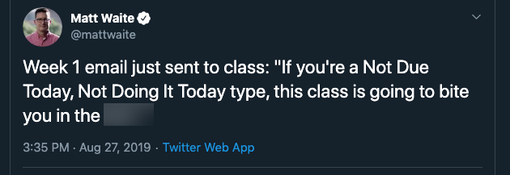

Empirical Reporting
(Otherwise known as MCO 510, Data Journalism, Spring 2023)
CLASS DETAILS
M-W 11:30-1:20p Cronkite 404b (behind the elevators)
Canvas: https://asu.instructure.com/courses/138967
Slack Workspace: https://asu-2231-mco510-21913.slack.com/
Sarah Cohen
sarah.h.cohen@asu.edu
Slack: @shcohen1
Zoom: https://asu.zoom.us/my/sarah.cohen
I’m available to work with you almost any time Mondays through Wednesdays except just before and during our class. Please you check in with me via Slack in advance to make sure I am not double-booked. These meetings can be held via Zoom or in person. I will also hold some study halls during the semester as you want them.
Cronkite policies, including the Diversity Principles, disability and religious accommodations, policies on sexual violence and harassment, and the Cronkite Academic Integrity Policy, are included on left-hand menu in the Canvas site for this and all Cronkite classes. These policies apply to all students in all classes.
Description
This is a class in data journalism focused the systematic use of public records, documents and other material in public affairs reporting. Previous generations might have called it “computer-assisted reporting” or “precision journalism”. Whatever the name, the idea is the same: original reporting and analysis in the service of stories, particularly in the accountability and explanatory genres.
Analyzing records can help you confirm or disprove a tip, isolate anecdotes, and explore stories or patterns that no one has thought to mention. When you use data-driven techniques, your street reporting will become deeper and more enlightening. Better yet, the techniques you’ll learn in this class will often yield exclusive stories.
By the end of this semester, you will be able to:
- Identify how and when analysis of electronic records might strengthen your story, provide important insights, or suggest new lines of reporting.
- Apply tools such as Excel and the R programming language for reporting in efficient, effective and ethical ways that avoid errors.
- Integrate data journalism techniques with traditional reporting methods.
- Write effectively with and about data, whether for text or for the ear.
Prerequisites
This is a required course for the Masters’ of Arts in Investiative Journalism at Cronkite. It is tightly coordinated with the rest of the curriculum, and depends on your having mastered the work done in Boot Camp in the fall semester. If you have not done this, you’ll need to review on your own:
- Numeracy for journalism. There is some self-help material on Canvas if you want to review it.
- Spreadsheet basics: Simple calculations, sorting, filtering and pivot tables. We’ll review this for one week, but you are expected to have completed the assignment from fall and reviewed the results of that assignment.
- Ethics in journailism: You should have a basic background on journalistic ethics, at least as practiced in the United States.
There is NO expectation that you have acquired or used data for your stories in the past, or that you have ever tried to write any computer code in any language.
Required materials and texts
All of the hardware and software required for class is available in the labs. If you choose to use your own laptop, it must be running Mac OS Mojave (version 10.14 or newer) or Windows 10 (or newer). All Mac and Windows machines made or updated since 2017 meet these requirements. Please contact me if you’re not sure if your operating system needs updating. A tablet or Chrome book just won’t work, and I can’t help you if you try to use them.
A regular mouse is strongly recommended. A basic wired mouse that connects to your USB port costs about $10 on Amazon.
Books and software
You do not need to buy any books or software. This site contains or links to all of the reading, viewing, and texts you need. We are using a bespoke online textbook I made that puts together and updates a lot of handouts and tutorials I’ve had scattered around various Canvas sites, Google Drive docs and Github repos. It’s a work in progress that will be updated throughout the semester.
The following free software will be used extensively in this class.
- The Slack app (available in Apple app stores, Android stores and Windows store). When possible, use the app rather than the version in your browser. The browser lacks some of the functions that are in the app.
- A free copy of Microsoft Excel available in https://myapps.asu.edu . When you go to Office 365 there, there will be a link on the upper right to download and install Office. The online version won’t work. We’re only going to use Excel for about two weeks, so you might just want to use the ones in labs if you haven’t already downloaded it.
- R and RStudio, both free community versions. We’ve tried using the cloud version in the past only to continually run into problems during your project. I don’t recommend it. We’ll set this up together.
We’ll discuss any other software. We may use OpenRefine for data cleaning, Tabula for dealing with PDFs, and git/Github/Github Pages for creating your own Github site for your data journalism. They’re all free.
Recommended
Beginning on Jan. 23, you will have access to all of the lessons in Datacamp, an online training academy that usually costs $25/month. You’ll have free access to it for six months, after which you would have to pay to keep going. I’ll distribute a link to let you sign up as soon as it’s activated. 1
I believe you already have the books that I’d recommend most for this course:
The Art of Access: Strategies for Acquiring Public Records, David Cullier and Charles N. Davis, 2nd edition (2018).
Investigative Reporters’ Handbook: A Guide to Documents, Databases, and Techniques, 6th Edition , by Brant Houston and Mark Horvit, 2021. Available for rent or purchase from MacMillan Learning.
Grading
The class uses a point system that initially adds up to 1,000 points for the semester.
- Daily work: 400
- Class preparation and labs: 300
- “What would you do?” posts and discussions : 100
- Graded homework: 150
-
Projects : 450
- Data replication project: 200
- Final story memo : 250
All work will be submitted and feedback reviewed through Canvas based on the due date shown there in Mountain Standard Time.
Y grade option
You have the option of a Y grade this semester, which signifies “satisfactory” completion of the course and is considered to be the equivalent of a C or above. This grade lets you earn course credit but is not factored into your GPA. If you opt for a Y grade and do not achieve a “satisfactory” level (70 percent or above), you will receive a D or an E, depending on their grades on assignments during the course. Email me at sarah.h.cohen@asu.edu informing me that you have elected the Y grade option by January 15. You cannot change your mind after the drop/add period.
Daily work
Labs, pre-labs and class preparation
Doing well in this class means working slowly, methodically and consistently throughout the semester.

Nearly half of your grade is dependent on this slow and steady work. There will be one or two low-stakes assignments almost every week that will, together, make up this grade. Sometimes, I’ll ask you to reflect on what you did and provide feedback. Other times, you will show that you went through a tutorial on your own. It also includes labs that we do in class.
What would you do?
You’ve had some background in journalism ethics, but there are specific issues that come up surrounding acquiring, analyzing and presenting data. You will be presented with at least four scenarios that are based on real-world situations. After reading the material, you will be asked to reflect on some specific questions on a discussion board, which will form the basis of our in-class discussion.
Grading daily work
(NB: I haven’t written out all of these assignments yet – I expect that most pre-labs will be 10 points and most labs will be 20 points, but I have to figure out how many of each first.)
| Percentage | Definition |
|---|---|
| 115% | I reserve the right to award extra points when the work shows extraordinary effort, thought and engagement. You can do everything right and still receive an A+ in the course without ever seeing one of these. Instead, it’s a way for me to acknowledge unusually ambitious work that goes well beyond the original assignment. |
| 100% | You have completed all of the work assigned at an acceptable level of quality, and submitted it according to the instructions by the deadline. This might include running code, writing code, providing questions or feedback, or summarizing your results as a journalist. The work shows no fundamental factual errors and reflects an attempt to apply the material at hand. Sometimes, you’ll end up explaining in your homework what you tried to accomplish but couldn’t quite succeed. I hope all of your assignments can acheive this level but understand that it’s not always possible. |
| 50% | You turned in a late or partial assignment or one that shows cursory review of the material. I hope these will be rare, but I expect most people will have one or two of these throughout the semester. |
| 0% | You didn’t turn anything in, or what was turned had no meaningful work done. |
You will get some very limited written feedback on these assignments, but much of class will be spent addressing the questions and opportunities that come up in them.
Replication project
There are three separate assignments for this project, which challenges you to reproduce some sentences published in real stories using the same data used by the reporters. I’ll provide the stories and the data. Your first job is to identify paragraphs in the story that depended on the dataset that you’ve been given. The second gives you a chance to turn in a draft of your work so that I can help you. The last one is the final version.
This course follows ASU’s grading policies:
- “A” is reserved for “excellent” or “outstanding” work, which goes beyond the explicit requirements in quality, depth, effort, or presentation.
- “B” means “successful” – really! That means it’s on time, accurate, written or presented in a professional way, and answers the requirements of the assignment.
- “C” is considered “Acceptable” work, in that it has met some, but not all, of the requirements.
Story memo
In this project, you’ll develop a story pitch using a combination of story backgrounding and data analysis. I’ll give you a choice of three datatsets that I know will work for this assignment. You may propose your own, but it must be easy to obtain, relatively clean, and complicated or large enough that there is something for you to analyze beyond a basic statistic. Generally, the dataset will be of individual records (accidents, inspections, deaths or events), not statistical compilations. You’ll understand this better as we move along.
The specific list of datasets may be coordinated with your investigative reporting class, News21 and/or the Howard Center, so they’re subject to change.
Although this is one-fifth of your grade, it’s split among four assignments over more than a month. You’ll build the memo a little at a time, so by the end, it won’t seem like a big lift. I promise.
Graded homework
There will be three smaller graded assignments that are more important than daily work but don’t rise to the level of a project. They are shown in Canvas each with 50 points.
Course policies
Showing up is 80 percent of life.
Woody Allen
This is an immersion, in-person class and is not offered via Zoom or ASU Sync.
The minimal requirement is to arrive on time, prepared, and ready to work. Please refrain from eating, napping, using social media, shopping, or working on something else. I expect you to treat your colleagues with respect and be polite to any guests. (I understand this class is over a lunchtime, but there is no eating allowed in the labs. I’ll be enforcing that.)
I will insist that devices are closed and turned off for guests, but it’s disprespectful to the entire class when you decide to do something else during discussions or presentations. In addition, research shows that you are much worse at multi-tasking than you think you are, and the class won’t stop because you got distracted or sidetracked.
I have a great deal of difficulty concentrating when someone is attending to something else during class. I will try not to stare, but I tend to lose my place and stumble over simple questions. In those cases, I may have to ask you to leave the classroom until you are ready to engage with the material we’re working on.
Attendance and deadlines
There are no excused absences in this course, except for true medical or other emergencies or religious observances. You might decide it’s more important to schedule a job interview, attend a family event, interview a source, or schedule a tight connection on a flight than to attend class or complete your work. If I were you, I might decide the same thing, but these are choices that reflect your priorities. They’re not emergencies, nor are they excused absences or deadlines.
As in all journalism work, you are expected to meet deadlines. Late graded assignments will be heavily penalized and more routine ones may not be accepted at all.
However, no one wants you to come to school if you are infected with COVID or have another serious illness, or if you have been instructed to quarantine because of close contact with someone who has tested positive. Here is what to do if you’re ill or in quarantine / isolation:
- If you suspect you have COVID, or if you believe you have been exposed and should quarantine, you should contact the dean of students for instructions about what to do next. I can get verification for your absence from them. If you test positive, I will work with you to help you keep up or catch up while you are not allowed to come to school.
- If there is a true emergency, such as a car accident or a death in the family, please let me know as soon as possible and we’ll work out what to do next. The same policy is in effect for religious observances.
- If you are feeling sick, you should contact ASU Health Services or your doctor. I will need a doctor’s note to extend any deadline or make accommodations for you.
In rare instances, another professor may try to require you to miss a class. Please inform me right away if this happens. I am already aware of the Borderlands trip.
When these emergency absences occur, it may be possible to let you observe via Zoom without participating in the class. It depends on when you tell me and what we’re doing that day.
The short answer is “yes” – I don’t take attendance and there is no class participation grade. I get it — sometimes you just don’t feel 100% or you have something more important to do or you just can’t get to school on time.
However, it will be up to you to keep up or catch up. You will not be offered the opportunity to observe via Zoom. Deadlines will not be extended. You’ll also be excluded from any group assignments that might be part of the class that day.
That said, give yourself a break. You may miss get an extension on two daily assignments without penalty without question. You don’t need to give me a reason.
Accuracy
If you pursue reporting with data-driven techniques, you’ll often create original information that no one else can confirm. In fact, your sources are often happy to explain a result you present to them, even if it’s entirely wrong. This puts an even bigger burden on you to understand your sources, to question your assumptions and find holes in your work. If an answer seems too newsworthy, walk through everything you’ve done step by step. Seek out errors; ask experts or colleagues to challenge your results. We’ll spend a lot of time on practices that will help protect you from errors but your own skepticism (and sometimes even fear) is the best defense.
I don’t expect your work to be polished and exact. However, work that shows a fundamental misunderstanding of the source, contains a severe miscalculation or misinterpretation, or ignores clear warning signs will receive an E. This is the equivalent of having to retract an entire story because it was based on an obvious falsehood.
Having trouble?
Learning data skills requires a lot of trial and error – a LOT of error. It’s frustrating and maddening at times and you won’t be alone. But there are some strategies that you can use to help get you past roadblocks.
- Slow down! Unlike the rest of journalism, going faster doesn’t help. Separate the problem into pieces and solve it one step at a time.
- If you’ve been working on something for more than 20 minutes without making any progress, don’t waste more time on it. If you’re making just a little progress, keep going. But take a break and come back to it if you’re stuck. Get help if you’re really stuck.
- Remember the goal: We’re not trying to become social scientists, computer programmers or data analysts. We’re journalists. Simplify your questions, focusing on newsworthiness rather than academic research.
- Practice on something you’re working on outside of school or for another class.
Cronkite school policies
Collaborations
All work submitted under your name must be your work and your work alone. When you are assigned work in teams, contributors should be credited when an individual was primarily responsible for a portion of the work. For example, if one student takes the lead on analyzing data and another on writing the results, you should give credit where it is due.
Extra Credit
Simple. There is none. Why? This course is made up of a lot of little pieces. They can’t be replaced by attending a lecture.
Cronkite School Diversity Principles:
The Walter Cronkite School of Journalism and Mass Communication embraces inclusivity in student, staff and faculty populations in order to create an academic environment that fosters diversity of thought and acceptance of all people regardless of race, gender, age, sexual orientation, or societal, political, cultural, economic, spiritual, or physical differences. To this end, the school directs efforts to the following four principles:
Actively seek out and encourage diverse populations to become productive members of the faculty, staff and the student body; Create and maintain a work, learning and social environment that is cognizant and supportive of a diversity of human differences and beliefs; Incorporate within the formal content of the curriculum and in each course an affirmation of the core journalistic values of accuracy, fairness, ethical behavior and sensitivity when reflecting an increasingly multicultural world; Foster and support a climate in which events and activities of the school reflect diversity of awareness, sensitivity to and support for people of different origins, orientations and abilities.
Student Accessibility and Inclusive Learning Services (SAILS)
Student Accessibility and Inclusive Learning Services facilitates accommodations for students who have registered with that office. Accommodations are determined on a case-by-case, course-by-course basis through an interactive process with people who can best support student success. Prior to receiving accommodations from their instructor, students must receive verification of eligibility by registering with SAILS. Student SAILS information is confidential.
Academic Integrity
The school has zero tolerance for academic dishonesty; instructors enforce academic integrity in every course and educational activity offered or sanctioned by the school. Any allegation of academic dishonesty will be referred to an appointed academic integrity officer for investigation. They elevate cases to the school’s standards committee for review and recommendation to the dean of the school. If the committee finds that a student has engaged in academic dishonesty in any form — including but not limited to cheating, plagiarizing, and fabricating (see examples here) — that student shall receive a grade of XE for the class and may face suspension or expulsion from ASU.
You must complete the Academic Integrity pledge before the end of the first week of class, included in Canvas as an assignment.
FAQ
Q: I don’t have any experience. What do I need to succeed?
Everyone in this class has gone through the boot camp required of all masters students. We covered numeracy and spreadsheet basics in that class, and those modules are prerequisites for this one. No other coding or data analysis background is expected.
Q: This looks like a lot of work. How long do I have to spend on it every week?
I expect that this course will follow the typical ASU time commitment – approximately 9 total hours per week. That suggests that, on average, you should expect to spend about 5 or 6 hours per week outside of class on preparation, homework and projects. The time commitment is a little front-loaded as we race to get you the skills you need to apply them later in the semester.
If you’re spending significantly LESS time, try to reconsider whether you’re really engaging with the material. If you ’re spending considerably MORE time, please let me know — that’s not the intention.
Q: What is Slack?
Slack is a messaging and teamwork app that has become the de facto standard in newsrooms, including the Howard Center, Cronkite News and News 21. You should set up alerts for key channels to be sure you’ll get class announcements. There is an assignment for the first day with guidelines to set it up.
Q: How should I communicate with you?
Slack or in person is best. All assignments must be turned in via Canvas assignments unless I direct you elsewhere. Do NOT email assignments. There are too many moving parts in this course, and I can’t guarantee I’ll keep track of anything submitted outside Canvas and Slack.
Q: How will I know how I’m doing?
Pay attention to the feedback on your routine homework and labs. I’ll give you a sense of where you’re excelling and where you might improve. I’m always happy to meet and discuss strategies that will help you get to the next level in your journalism or your data analysis skills.
I’ve found that Canvas isn’t very accurate in estimating the final grade as we work through the semester, so I’ve turned that feature off. It will just mislead you.
Q: How do I ask good questions?
In technical work, asking a good question is an art. Try to:
- Describe what you are trying to do – what does success look like? What question are you trying to answer?
- Provide a snippet of the code or the Excel formula that you’re trying
- Take a screen shot or quote the error message if there is one
Q: I already know how to code and analyze data. Why do I have to take this class?
Even if you know how to code, I presume you are at Cronkite because you want to apply all of your skills to a journalism career. You probably knew how to use a phone or take a picture before you came to j-school, but you may not have used them the way you do now. That said, talk with me if you’re concerned that you won’t be challenged enough. We’ll find ways to make the time productive and take you to the next level in data reporting.
Footnotes
I waited until you’d use it so that you can have it for as long as possible after class ends↩︎